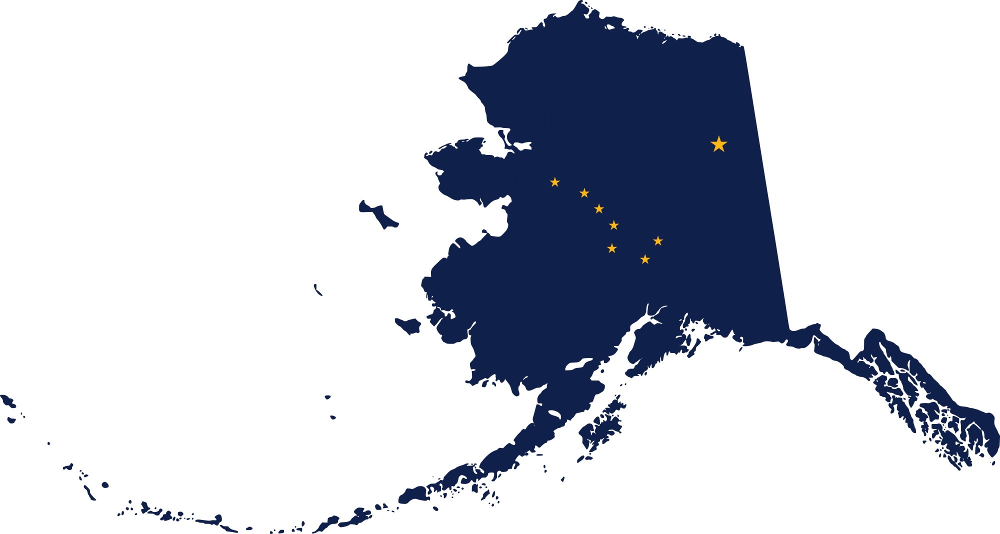
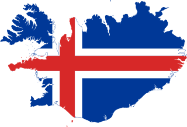
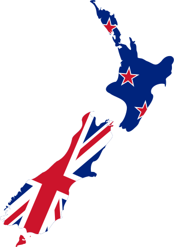
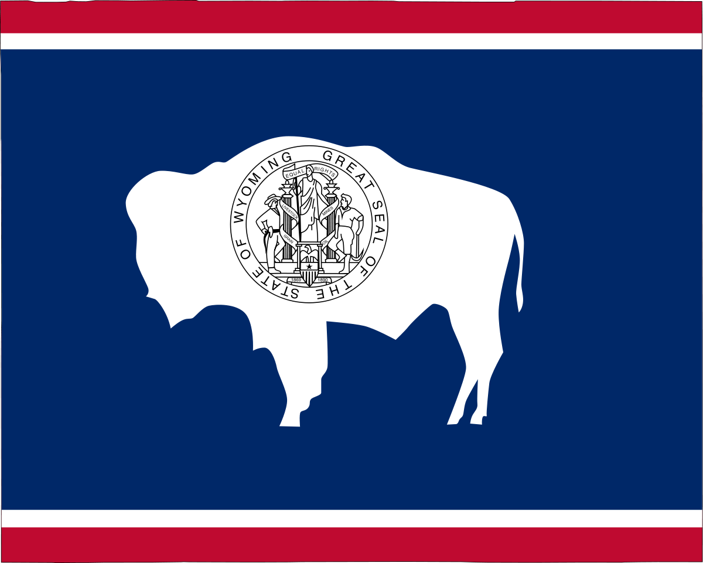

Hello, everyone!
About Me:
Hello, my name is Matthew Cunkelman and this is my website v2.
I originally set out to build and host a site when I was working in the Oil and Gas industry.
I was curious to see what I could learn and figure out on my own.
I started by researching and then building a computer with Linux Ubuntu operating system.
After I had built a computer I wanted to know what else I could do, so I started looking into network configurations and converting this computer into a server.
The more time I spent working on my computer and exploring
(I have a Ubuntu install USB on my keychain because I had to wipe and start over so many times) the more I wanted to try.
Knowing that anything I did I could undo
(since this wan't my main or work computer, it had no critical files),
encouraged me to try anything I wanted.
Eventually I figured out how to host a live website, and I built a very simple site for myself.
I managed to build the skills to change careers, and I am now an Autonomous Systems Engineer for Uber ATG.
My site sat untouched for a while, while I pursued other learning opportunities.
But now with some help (From Stephen Mann Visit his site here ) I am rebuilding it to better showcase me, and the things I am passionate about.
I am building out tabs for me, my career, my travel (and places I still want to travel) as well as some of my favorite recipes
(I love to cook).
Take a look around, and feel free to reach out if you have questions.
I am utilizing GitHub to build this site and remotely push updates to my server, I also use Atom.io as my text editor.
I do self host, so occasionally there will be some outages, but I try to limit them to a few minutes here and there.
![[Welcoming Pic]](./images/me_iceland.png)
Major Recent Changes
- This is a complete overhaul of the site
Updates in the Future
- I want to rebuild my travel site
- I need to figure out how I want to host my recipes
Biography
I am an engineer with over 8 years of professional experience between Autonomous Vehicles and the Oil and Gas industry.
I have spent the majority of my career in the oil and gas industry,
working as a Petroleum Engineer after obtaining a degree in Mechanical Engineering.
After 7 years as a Petroleum Engineer, I transitioned again to being an Autonomous Systems Engineer for UBER ATG.
Both transitions required adapting my existing skills as well as learning new ones.
Creating v1 of this site, was a part of teaching myself some of those new skills.
Throughout my career I have learned many new skills,
some were directly necessary for my day to day tasks, while others branched far outside my roles expectations.
I have had the privilege of working with a lot of unique people, with unique backgrounds and skill sets.
I have tried to take advantage of this when I can, to learn as much as possible, and it has made me a more well rounded and resourceful person.
| About Me | |
|---|---|
| Matthew J. Cunkelman | |
| Penn State University – University Park | |
| Class of 2012 | |
| B.S. in Mechanical Engineering | |
| Community College of Allegheny County | |
| Persuing an A.S. in Software Development | |
| Located in Pittsburgh, PA | |
| +1 (724) 549-2382 | |
| cunkelman.matthew@gmail.com | |
| www.linkedin.com/in /mcunkelman |
![[Profile Pic]](./images/Matt_Waterfall.png)
| Quick Skills | |
|---|---|
| Mechanical/Petroleum/Autonomous Systems Engineering | |
| Computer Hardware | |
| Coding | |
| Networking | |
| Google Suite | |
| Critical Thinking and Problem Solving | |
| System Requirements Development | |
| Cross Team Collaboration | |
| Leader / Mentor / Team Member / Independent Worker | |
| Open to New Things and Adaptable to New Industries |
| Quick Skills | |
|---|---|
| Technical Writing | |
| Computer-Aided Design (CAD) | |
| Coding | |
| Nuclear / Mechanical / Petroleum Engineering | |
| Microsoft Windows and Office Products | |
| Critical Thinking and Problem Solving | |
| Excellent Communication | |
| Continuous Improvement | |
| Leader / Mentor / Team Member / Independent Worker | |
| Open to New Things and Adaptable to New Industries |
*Check out my Career tab to see a detailed version of my résumé and more professional information about me.
Engineer with 8+ Years of Experience
UBER ATG
Autonomous Systems Engineer
| Autonomous Systems Engineer | April 14, 2019 – Present |
Engineer
(April 14, 2019 – Present)
EQT Production Co.
Reservoir Optimization Engineer

| Reservoir Optimization Engineer | Sept. 14, 2015 – Jan. 7, 2019 |
Engineer
(Sept. 14, 2015 – Jan. 7, 2019)
*This page is still a work in progress.
Travel
I have been fortunate enough to travel to some really cool places,
and this tab is all about recording those adventures.
Check out the links below for more info on each of my trips.
Alaska 
Summer 2015
![[Alaska Cover Photo]](./images/travel/Alaska/Alaska_Images_small/Matenuska Glacier.png)
Iceland 
September 2017
![[Iceland Cover Photo]](./images/travel/Iceland/Iceland_Images_Small/Svínafellsjökull-01.png)
Australia
/ New Zealand 
July 2018
Wyoming 
August 2019
![[Wyoming Cover Photo]](./images/travel/Wyoming/Wyoming_cover.png)
Places on my Bucket List:
- Patagonia - South America
- Banff - Canada
- Norway
- Germany/Switzerland/Austria
Browser Compatibility Tests
Latest Compatibility Tests: 2020-04-03
- Click on the browser tabs above to see any current compatibility issues with the most popular browsers
 Google Chrome 80
Google Chrome 80
- No issues from what I can see
 Chromium-Based Browsers
Chromium-Based Browsers
- This website should function similarly to Chrome on any Chromium-based browser (Microsoft Edge, Opera, Yandex, Samsung Internet, Amazon Silk, etc.)
 Mozilla Firefox 74
Mozilla Firefox 74
- Google Fonts seem to cause the padding of the red hover animation on the tabs to be off in Firefox, despite being correct in Chromium-based browsers
 Mozilla SeaMonkey 2.53
Mozilla SeaMonkey 2.53
- Browser compatibility tabs are not connected to this content section
- I tested this website on Mozilla's SeaMonkey to see how an open-sourced browser based on Netscape Communicator's old design would function. I don't plan on testing this browser further as it's not widely popular.
 Microsoft Edge 80
Microsoft Edge 80
- No issues from what I can see
 Microsoft Edge 44
Microsoft Edge 44
- EdgeHTML versions of Edge don't support dropdown details, so Notes tab changelogs are fully displayed at all times
- I've upgraded to the latest version of Edge, so I won't be verifying any issues past March, 20, 2020
 Microsoft Internet Explorer 11
Microsoft Internet Explorer 11
- IE11 doesn't support dropdown details, so Notes tab changelogs are fully displayed at all times
- Google Fonts seem to cause the padding of the red hover animation on the tabs to be off in IE11, despite being correct in Chromium-based browsers
 Opera 67
Opera 67
- No issues from what I can see
*I have no way of verifying things on Safari myself
 Safari 13
Safari 13
- My friend tested this website on his MAC - Google Fonts seem to cause the padding of the red hover animation on the tabs to be off in Safari, despite being correct in Chromium-based browsers
Android
 Chrome 80 App
Chrome 80 App
- Mobile Site Setting: No issues from what I can see
- Desktop Site Setting: Odd text and layout scaling issues
 Samsung Internet 11 App
Samsung Internet 11 App
- Mobile Version Setting: No issues from what I can see
- Desktop Version Setting: Odd text and layout scaling issues
 UC Browser 13 App
UC Browser 13 App
- No issues from what I can see
- I tested this website on UC Browser for Android and everything worked without issues. While it's a fairly popular browser in Asian markets, I don't plan on testing this browser further as Google Chrome is by far the most popular overall for Android.
Apple iOS
*I have no way of verifying things on iOS myself
 Safari 13 App
Safari 13 App
- My friend tested this website on his iPhone and said it was good
 Chrome 80 App
Chrome 80 App
- Still need to test
Website Version Changelogs
smann.A Changelog
Version Active: March 5, 2020 – March 20, 2020
- 2020-03-05
- Began designing initial website
- 2020-03-06
- Updated with tab-style browsing
- Filled out color schemes
- Added info to Home tab
- 2020-03-07
- Updated tab layout to a modern look with no borders and solid colors
- Started adding descriptions to each tab
- Verified compatibility with multiple browsers and Android
- Added script to check whether viewing on desktop or mobile (Doesn't actually do anything yet)
- 2020-03-09
- Updated to a vertical tab layout on the side
- Swapped to Penn State official color scheme
- Dark blue: Pantone 282
- White
- 2020-03-10
- Added info to Career tab
- Added icons and images to navigation bar
- Diagnosed some issues with browser compatibility
- I think many of these issues are because I'm opening the file locally and don't have the hosted website fully setup for online access
- 2020-03-11
- Incorporated buttons for changing tab layouts and remembering the layouts through a cookie
- Corrected Career tab layout by rewriting some code that had issues
- Corrected some container issues where sometimes the smann logo was wider than the rest of the bar on vertical tab layout
- Added info to Hobbies tab
- 2020-03-12
- Added info to Profile and Education tabs
- Added "TrailBlazer Custom Audio System" to Hobbies tab
- 2020-03-13
- Website now fully hosted for online access!
- Fixed quite a few compatibility issues now that I can view online and not just locally
- Added "Parent's Home Theater System" to Hobbies tab
- Created new icons and logos
- 2020-03-14
- Added "My 2015 Chevy SS LSA Install" to Hobbies tab
- Added LinkedIn hyperlink icon in container
- Renamed navigation classes to what they actually represent
- 2020-03-15
- Changed highlighted tab color from gold to gray/blue to get away from the gold and Penn State dark blue looking like Michigan's color scheme (Yuck haha)
- Added email hyperlink icon in container
- Added professional references to Career tab
- Fully integrated Education tab into Profile tab
- Updated skills on Profile tab
- Redesigned Notes tab since it was a complete eye-sore before
- 2020-03-16
- Updated Hobbies tab to have dropdowns for each section
- Fixed some compatibility issues
- Created a new design theme, but scrapped it since it didn't come out like I thought it would
- 2020-03-17
- Fixed smann logo and links going over Notes tab before disappearing on vertical tab layout
- Updated navigation tab visualizations
- Added 3D CAD work samples to Career tab
- Got rid of dropdown menus on Hobbies tab after remembering that IE11 and Edge don't display them correctly and they came out hideous on those browsers
- 2020-03-18
- Figured out issue with one stylesheet link overriding another stylesheet; ended up using @import and now they both work
- Updated some content
- Added some metadata
- Cleaned up some coding
- Integrated tab layout change buttons into navigation bar
- Added a welcoming pic to the Home tab
- Resized pictures for better display online
- Removed résumé iframe that was constantly glitchy and replaced with an image résumé on the Career tab
- 2020-03-19
- Added an About Me to the Profile tab; currently hidden until I finish it
- Created an overall stylesheet to pull out a lot of inline styling from the HTML file
- 2020-03-20
- Redesigned Career and Notes tabs for better visualization
- Set initial-scale in metadata to 0.62 for proper scaling on mobile browsers
- Added a bunch of @media styles to change layouts and text when the page is resized too small
- Redesigned the Home tab for better visualization
smann.B Changelog
Version Active: March 21, 2020 – Present
- 2020-03-21
- Began complete website overhaul with better visualization, working mobile version, and pulling out all inline styling to make it easier in the future to apply skinning and themes
- 2020-03-22
- Tested multiple setups and designs to find which I liked the most (I have a good idea, but still deciding)
- Brought over Home (still a WIP), Hobbies, and Notes tab info
- 2020-03-23
- Brought over Career info
- Fixed a bunch of issues with the layout and formatting so things properly display on both desktop and mobile devices
- Brought over LinkedIn and email icon links in navigation bar
- Re-stylized every tab to work with both desktop, mobile, and in-between versions
- Fixed a few major persistent issues with coding and cleaned up a few elements
- 2020-03-24
- Brought over Profile tab info
- Finalized mobile version compatibility and fixed all issues that I could see
- Fixed the issue with the Notes tab's display tags randomly causing overflow on smaller devices
- Swapped this version over to being the main version of my website
- 2020-03-25
- Began handing out website URL on job applications
- Added a biography section to the Profile tab
- Added a "Major recent changes..." section to the Home tab
- Removed all unnecessary coding and consolidated existing coding on HTML and CSS
- Swapped to Segoe UI as being the main font on larger displays with Arimo on smaller displays
- Stylized the text on the Home and Profile tabs to coincide with the styling of the Career tab
- 2020-03-26
- Designed a new smann logo that resembles an oscillating wave for the MANN part
- Updated to a sleeker design for smaller screens
- Fixed some margin issues with figure captions
- 2020-03-27
- Went through line-by-line in my CSS to put styling in a common order that would make future changes easier
- Minor modifications to HTML and layout
- 2020-03-28
- Fixed top navigation bar so it always shows
- Changed scrollbar to only be in the content area
- Restyled scrollbar on webkit browsers (Chrome, Opera, Edge, Safari)
- 2020-03-29
- Changed styling to prevent content shifting when vertical scrollbar shows/hides
- Put website in Featured section of LinkedIn page
- 2020-03-30
- Ran latest compatibility tests for browsers
- Updated look with a background color on larger displays
- 2020-03-31
- Added descriptive menu button for browser compatibility tests
- 2020-04-01
- Got a wicked awesome tattoo of Steve Buscemi on my chest
- Watched the greatest movie ever, Gigli
- Tamed a nasty-tempered, fire-breathing, 30-foot-tall hamster with Wonder Woman's lasso
- Went to the store and was the only person who didn't buy six 12-packs of toilet paper
- April Fools!
- 2020-04-02
- Added footer with quick links
- Removed webkit scrollbar style to get back to the default style
- Restyled Career tab so the professional experiences and references showed up better on mobile displays
- 2020-04-03
- Added and tested some more browsers in the compatibility section of the recipes tab
- 2020-04-04
- Replaced my image résumé with a text résumé on the Careers tab so it wouldn't scale too small on smaller displays, making it unreadable
- Changed some colors up
- 2020-04-05
- Added footer elements to mobile versions
- Changed mobile version styling
- Updated font-families
- Cleaned up a lot of CSS coding that was unnecessary after changing things around
- 2020-04-06
- Removed LinkedIn and email links in the navigation bar since they are now in the footer below the tab's content
- Combined some @media events in the CSS coding to simplify changes
- 2020-04-07
- Rewrote the text on the Home and Profile tabs
- 2020-04-09
- Updated PDF résumé to newest version
- Updated career references
- Updated travel tab
- 2020-04-14
- Updated to using Open Sans as the default text for everything with Montserrat used in the navigation bar and footer
- 2020-04-15
- Added links to the websites of companies I've worked for by clicking on the company logo on the Career tab
- Cleaned up some excess coding that no longer applies and made minor changes to some text
- 2020-04-16
- Added a simple opening animation splash screen on page load/refresh
- Added Open Graph Protocol metadata for when this website is shared anywhere
- 2020-04-17
- Added quick links in navigation bar and centered tabs to help with massive displays
- 2020-04-18
- Added a modal that opens for the user to choose between my stylized or plain text résumé
- Replaced plain text résumé file